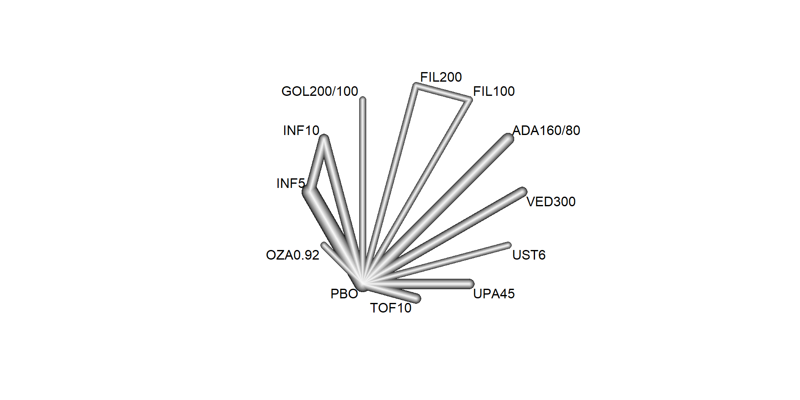

library(dplyr)
library(gemtc)
library(netmeta)6 Systematic review and meta-analysis of Real-World Evidence
Thomas Debray ![]()
6.1 Introduction
We first load the required packages
6.2 Pairwise meta-analysis of clinical trials
6.2.2 Remdesivir for coronavirus disease 2019
In aforementioned example, a total of 4 trials compared remdesivir to standard care:

6.3 Network meta-analysis of clinical trials
We here use the R packages netmeta for conducting a frequentist network meta-analysis. A detailed tutorial on the use of netmeta is available from the book Doing Meta-Analysis with R: A Hands-On Guide.
6.3.1 Interventions for coronavirus disease 2019
We here consider data from a study which aimed to assess the comparative effectiveness of remdesivir and tocilizumab for reducing mortality in hospitalised COVID-19 patients. 80 trials were identified from two published network meta-analyses (Selvarajan et al. 2022), (Siemieniuk et al. 2020), a living COVID-19 trial database (COVID-NMA Initiative) [Covid-NMA.com], and a clinical trial database [clinicaltrials.gov]. Trials were included in this study if the patient population included hospitalized COVID-19 patients, active treatment was remdesivir or tocilizumab, comparator treatment was placebo or standard care, short-term mortality data was available, and the trial was published. 21 trials were included. For included trials, a risk of bias score was extracted from the COVID-NMA Initiative.
| studlab | treat1 | treat2 | event1 | n1 | event2 | n2 |
|---|---|---|---|---|---|---|
| Ader | REM | STD | 34 | 414 | 37 | 418 |
| Beigel (ACTT-1) | REM | STD | 59 | 541 | 77 | 521 |
| Broman | TOCI | STD | 1 | 57 | 0 | 29 |
| Criner | REM | STD | 4 | 384 | 4 | 200 |
| Declerq (COV-AID) | TOCI | STD | 10 | 81 | 9 | 74 |
| Gordon (REMAP-CAP) | TOCI | STD | 83 | 353 | 116 | 358 |
| Hermine (CORIMUNO) | TOCI | STD | 7 | 63 | 8 | 67 |
| Horby (RECOVERY) | TOCI | STD | 621 | 2022 | 729 | 2094 |
| Islam | REM | STD | 0 | 30 | 0 | 30 |
| Mahajan | REM | STD | 5 | 34 | 3 | 36 |
| Pan (WHO Solidarity) | REM | STD | 602 | 4146 | 643 | 4129 |
| Rosas (COVACTA) | TOCI | STD | 58 | 294 | 28 | 144 |
| Rutgers | TOCI | STD | 21 | 174 | 34 | 180 |
| Salama (EMPACTA) | TOCI | STD | 26 | 249 | 11 | 128 |
| Salvarani | TOCI | STD | 2 | 60 | 1 | 63 |
| Soin (COVINTOC) | TOCI | STD | 11 | 92 | 15 | 88 |
| Spinner | REM | STD | 5 | 384 | 4 | 200 |
| Stone (BACC-BAY) | TOCI | STD | 9 | 161 | 4 | 82 |
| Talaschian | TOCI | STD | 5 | 17 | 4 | 19 |
| Veiga (TOCIBRAS) | TOCI | STD | 14 | 65 | 6 | 64 |
| Wang | REM | STD | 22 | 158 | 10 | 78 |
The corresponding network is displayed below:
We use the following command to calculate the log odds ratios and corresponding standard errors for each study:
covid <- pairwise(treat = treat,
event = event,
n = n,
studlab = studlab,
sm = "OR")
head(covid)| TE | seTE | studlab | treat1 | treat2 | event1 | n1 | event2 | n2 | incr | allstudies |
|---|---|---|---|---|---|---|---|---|---|---|
| -0.0819293 | 0.2483849 | Ader | REM | STD | 34 | 414 | 37 | 418 | 0.0 | FALSE |
| -0.3483875 | 0.1851030 | Beigel (ACTT-1) | REM | STD | 59 | 541 | 77 | 521 | 0.0 | FALSE |
| 0.4487619 | 1.6487159 | Broman | TOCI | STD | 1 | 57 | 0 | 29 | 0.5 | FALSE |
| -0.6620566 | 0.7125543 | Criner | REM | STD | 4 | 384 | 4 | 200 | 0.0 | FALSE |
| 0.0170679 | 0.4904898 | Declerq (COV-AID) | TOCI | STD | 10 | 81 | 9 | 74 | 0.0 | FALSE |
| -0.4442338 | 0.1688337 | Gordon (REMAP-CAP) | TOCI | STD | 83 | 353 | 116 | 358 | 0.0 | FALSE |
Below, we conduct a random effects network meta-analysis where we consider standard care (STD) as the control treatment. Note that we have one study where zero cell counts occur, this study will not contribute to the NMA as the log odds ratio and its standard error cannot be determined.
NMA.covid <- netmeta(TE = TE, seTE = seTE, treat1 = treat1, treat2 = treat2,
studlab = studlab, data = covid, sm = "OR", ref = "STD",
comb.random = TRUE, common = FALSE, warn = FALSE)
NMA.covid Number of studies: k = 20
Number of pairwise comparisons: m = 20
Number of treatments: n = 3
Number of designs: d = 2
Random effects model
Treatment estimate (sm = 'OR', comparison: other treatments vs 'STD'):
OR 95%-CI z p-value
REM 0.8999 [0.8067; 1.0039] -1.89 0.0588
STD . . . .
TOCI 0.8301 [0.7434; 0.9268] -3.31 0.0009
Quantifying heterogeneity / inconsistency:
tau^2 = 0; tau = 0; I^2 = 0% [0.0%; 48.9%]
Tests of heterogeneity (within designs) and inconsistency (between designs):
Q d.f. p-value
Total 16.38 18 0.5663
Within designs 16.38 18 0.5663
Between designs 0.00 0 --A league table of the treatment effect estimates is given below:
netleague(NMA.covid)League table (random effects model):
REM 0.8999 [0.8067; 1.0039] .
0.8999 [0.8067; 1.0039] STD 1.2047 [1.0789; 1.3451]
1.0842 [0.9282; 1.2663] 1.2047 [1.0789; 1.3451] TOCIWe can also present the results in a forest plot:

We now consider a Bayesian random effects network meta-analysis that analyzes the observed event counts using a binomial link function.
bdata <- data.frame(study = studlab,
treatment = treat,
responders = event,
sampleSize = n)
network <- mtc.network(data.ab = bdata)
model <- mtc.model(network,
likelihood = "binom",
link = "log",
linearModel = "random",
n.chain = 3)# Adaptation
mcmc1 <- mtc.run(model, n.adapt = 1000, n.iter = 1000, thin = 10)Compiling model graph
Resolving undeclared variables
Allocating nodes
Graph information:
Observed stochastic nodes: 42
Unobserved stochastic nodes: 45
Total graph size: 930
Initializing model# Sampling
mcmc2 <- mtc.run(model, n.adapt = 10000, n.iter = 100000, thin = 10)Compiling model graph
Resolving undeclared variables
Allocating nodes
Graph information:
Observed stochastic nodes: 42
Unobserved stochastic nodes: 45
Total graph size: 930
Initializing modelWe can extract the pooled treatment effect estimates from the posterior distribution. When using STD as control group, we have:
summary(relative.effect(mcmc2, t1 = "STD"))
Results on the Log Risk Ratio scale
Iterations = 10010:110000
Thinning interval = 10
Number of chains = 3
Sample size per chain = 10000
1. Empirical mean and standard deviation for each variable,
plus standard error of the mean:
Mean SD Naive SE Time-series SE
d.STD.REM -0.1076 0.09780 0.0005647 0.0008214
d.STD.TOCI -0.1117 0.08379 0.0004837 0.0008591
sd.d 0.1126 0.08792 0.0005076 0.0016962
2. Quantiles for each variable:
2.5% 25% 50% 75% 97.5%
d.STD.REM -0.316900 -0.16123 -0.10445 -0.05121 0.08397
d.STD.TOCI -0.258200 -0.16371 -0.12000 -0.06881 0.08017
sd.d 0.005032 0.04499 0.09371 0.15943 0.32697The corresponding odds ratios are as follows:
| Comparison | 95% CrI |
|---|---|
| REM vs. STD | 0.9 (0.73; 1.09) |
| TOCI vs. STD | 0.89 (0.77; 1.08) |
| REM vs. TOCI | 1.02 (0.75; 1.27) |
Finally, we expand the COVID-19 network with trials investigating the effectiveness of hydroxychloroquine (HCQ), lopinavir/ritonavir (LOPI), dexamethasone (DEXA) or interferon-\(\beta\) (INTB) (Selvarajan et al. 2022). The corresponding network is displayed below:
We conducted a random effects network meta-analysis, results are depicted below:
Number of studies: k = 33
Number of pairwise comparisons: m = 33
Number of treatments: n = 7
Number of designs: d = 6
Random effects model
Treatment estimate (sm = 'OR', comparison: other treatments vs 'STD'):
OR 95%-CI z p-value 95%-PI
DEXA 0.8557 [0.7558; 0.9688] -2.46 0.0139 [0.7463; 0.9812]
HCQ 1.1809 [0.8934; 1.5610] 1.17 0.2428 [0.8786; 1.5872]
INTB 1.1606 [0.9732; 1.3841] 1.66 0.0973 [0.9604; 1.4026]
LOPI 1.0072 [0.8906; 1.1392] 0.11 0.9085 [0.8794; 1.1537]
REM 0.8983 [0.8014; 1.0070] -1.84 0.0658 [0.7913; 1.0199]
STD . . . . .
TOCI 0.8304 [0.7410; 0.9306] -3.20 0.0014 [0.7316; 0.9426]
Quantifying heterogeneity / inconsistency:
tau^2 = 0.0004; tau = 0.0205; I^2 = 0.6% [0.0%; 42.3%]
Tests of heterogeneity (within designs) and inconsistency (between designs):
Q d.f. p-value
Total 27.18 27 0.4543
Within designs 27.18 27 0.4543
Between designs 0.00 0 --We can calculate the P score for each treatment as follows:
netrank(NMA.covidf) P-score
TOCI 0.9070
DEXA 0.8357
REM 0.7143
STD 0.4027
LOPI 0.3899
HCQ 0.1336
INTB 0.11666.3.2 Pharmacologic treatments for chronic obstructive pulmonary disease
In this example, we consider the resuls from a systematic review of randomized controlled trials on pharmacologic treatments for chronic obstructive pulmonary disease (Baker, Baker, and Coleman 2009). The primary outcome, occurrence of one or more episodes of COPD exacerbation, is binary (yes / no). For this outcome, five drug treatments (fluticasone, budesonide, salmeterol, formoterol, tiotropium) and two combinations (fluticasone + salmeterol, budesonide + formoterol) were compared to placebo. The authors considered the two combinations as separate treatments instead of evaluating the individual components.
data(Baker2009)| study | year | id | treatment | exac | total |
|---|---|---|---|---|---|
| Llewellyn-Jones 1996 | 1996 | 1 | Fluticasone | 0 | 8 |
| Llewellyn-Jones 1996 | 1996 | 1 | Placebo | 3 | 8 |
| Boyd 1997 | 1997 | 2 | Salmeterol | 47 | 229 |
| Boyd 1997 | 1997 | 2 | Placebo | 59 | 227 |
| Paggiaro 1998 | 1998 | 3 | Fluticasone | 45 | 142 |
| Paggiaro 1998 | 1998 | 3 | Placebo | 51 | 139 |
Baker <- pairwise(treat = treatment,
event = exac,
n = total,
studlab = id,
sm = "OR",
data = Baker2009)
NMA.COPD <- netmeta(TE = TE, seTE = seTE, treat1 = treat1, treat2 = treat2,
studlab = studlab, data = Baker, sm = "OR", ref = "Placebo",
comb.random = TRUE)Warning: Comparisons with missing TE / seTE or zero seTE not considered in
network meta-analysis.Comparisons not considered in network meta-analysis:
studlab treat1 treat2 TE seTE
39 Fluticasone+Salmeterol Placebo NA NA
39 Fluticasone+Salmeterol Salmeterol NA NA
39 Salmeterol Placebo NA NAnetgraph(NMA.COPD)6.3.3 Advanced Therapies for Ulcerative Colitis
In this example, we consider a systematic literature review of Phase 3 randomized controlled trials investigating the following advanced therapies: infliximab, adalimumab, vedolizumab, golimumab, tofacitinib, ustekinumab, filgotinib, ozanimod, and upadacitinib (Panaccione et al. 2023). This review included 48 RCTs, from which 23 were found eligible for inclusion in a network meta-analysis. The included RCT populations were largely comparable in their baseline characteristics, though some heterogeneity was noted in weight, disease duration, extent of disease, and concomitant medications. A risk of bias assessment showed a low risk of bias for all included RCTs, which were all industry sponsored.
We here focus on the synthesis of 18 trials that contributed efficacy data for induction in bio-naive populations. The following FDA- and/or EMA-approved biologic or SMD doses were investigated:
- Adalimumab subcutaneous 160 mg at week 0, 80 mg at week 2, and 40 mg at week 4 (
ADA160/80) - Infliximab intravenous 5 mg/kg (
INF5) at weeks 0, 2, and 6 then every 8 weeks - Infliximab intravenous 10 mg/kg (
INF10) at weeks 0, 2, and 6 then every 8 weeks - Filgotinib oral 100 mg once daily (
FIL100) - Filgotinib oral 200 mg once daily (
FIL200) - Golimumab subcutaneous 200 mg at week 0 and 100 mg at week 2 (
GOL200/100) - Ozanimod oral 0.23 mg once daily for 4 days, 0.46 mg once daily for 3 days, then 0.92 mg once daily (
OZA0.92) - Tofacitinib oral 10 mg twice daily for 8 weeks (
TOF10) - Upadacitinib oral 45 mg once daily for 8 weeks (
UPA45) - Ustekinumab intravenous 6 mg/kg at week 0 (
UST6) - Vedolizumab intravenous 300 mg at weeks 0, 2, and 6 (
VED300)
The reference treatment is placebo (PBO).
| studlab | treat1 | treat2 | event1 | n1 | event2 | n2 |
|---|---|---|---|---|---|---|
| ACT-1 | INF10 | INF5 | 39 | 122 | 47 | 121 |
| ACT-1 | INF10 | PBO | 39 | 122 | 18 | 121 |
| ACT-1 | INF5 | PBO | 47 | 121 | 18 | 121 |
| ACT-2 | INF10 | INF5 | 33 | 120 | 41 | 121 |
| ACT-2 | INF10 | PBO | 33 | 120 | 7 | 123 |
| ACT-2 | INF5 | PBO | 41 | 121 | 7 | 123 |
| GEMINI 1 | VED300 | PBO | 30 | 130 | 5 | 76 |
| Japic CTI-060298 | INF5 | PBO | 21 | 104 | 11 | 104 |
| Jiang 2015 | INF5 | PBO | 22 | 41 | 9 | 41 |
| M10-447 | ADA160/80 | PBO | 9 | 90 | 11 | 96 |
| NCT01551290 | INF5 | PBO | 11 | 50 | 5 | 49 |
| NCT02039505 | VED300 | PBO | 22 | 79 | 6 | 41 |
| OCTAVE 1 | TOF10 | PBO | 56 | 222 | 9 | 57 |
| OCTAVE 2 | TOF10 | PBO | 43 | 195 | 4 | 47 |
| PURSUIT-SC | GOL200/100 | PBO | 45 | 253 | 16 | 251 |
| SELECTION | FIL100 | FIL200 | 47 | 277 | 60 | 245 |
| SELECTION | FIL100 | PBO | 47 | 277 | 17 | 137 |
| SELECTION | FIL200 | PBO | 60 | 245 | 17 | 137 |
| TRUE NORTH | OZA0.92 | PBO | 66 | 299 | 10 | 151 |
| U-ACCOMPLISH | UPA45 | PBO | 54 | 166 | 3 | 81 |
| U-ACHIEVE Study 2 | UPA45 | PBO | 41 | 145 | 4 | 72 |
| ULTRA-1 | ADA160/80 | PBO | 24 | 130 | 12 | 130 |
| ULTRA-2 | ADA160/80 | PBO | 32 | 150 | 16 | 145 |
| UNIFI | UST6 | PBO | 27 | 147 | 15 | 151 |
The corresponding network is displayed below:

Below, we conduct a random effects network meta-analysis of the reported study effects (expressed as odds ratio) and consider placebo (treat = "PBO") as the control treatment.
NMA.uc <- netmeta(TE = TE, seTE = seTE, treat1 = treat1, treat2 = treat2,
studlab = studlab, data = UlcerativeColitis, sm = "OR",
ref = "PBO", common = FALSE, comb.random = TRUE)
NMA.ucAll treatments except FIL100 and UST6 are significantly more efficacious than PBO at inducing clinical remission. We can now estimate the probabilities of each treatment being at each possible rank and the SUCRAs (Surface Under the Cumulative RAnking curve):
sucra.uc <- rankogram(NMA.uc, nsim = 100, random = TRUE, common = FALSE,
small.values = "undesirable")
# Exctract the SUCRA values
sucra.uc$ranking.random ADA160/80 FIL100 FIL200 GOL200/100 INF10 INF5 OZA0.92
0.26181818 0.20363636 0.43818182 0.59727273 0.61909091 0.76181818 0.78636364
PBO TOF10 UPA45 UST6 VED300
0.01909091 0.39727273 0.97909091 0.33363636 0.60272727 These results indicate that 97.9% of the evaluated treatments are worse than UPA45.
Version info
This chapter was rendered using the following version of R and its packages:
R version 4.2.3 (2023-03-15)
Platform: x86_64-pc-linux-gnu (64-bit)
Running under: Ubuntu 22.04.4 LTS
Matrix products: default
BLAS: /usr/lib/x86_64-linux-gnu/openblas-pthread/libblas.so.3
LAPACK: /usr/lib/x86_64-linux-gnu/openblas-pthread/libopenblasp-r0.3.20.so
locale:
[1] LC_CTYPE=C.UTF-8 LC_NUMERIC=C LC_TIME=C.UTF-8
[4] LC_COLLATE=C.UTF-8 LC_MONETARY=C.UTF-8 LC_MESSAGES=C.UTF-8
[7] LC_PAPER=C.UTF-8 LC_NAME=C LC_ADDRESS=C
[10] LC_TELEPHONE=C LC_MEASUREMENT=C.UTF-8 LC_IDENTIFICATION=C
attached base packages:
[1] stats graphics grDevices utils datasets methods base
other attached packages:
[1] netmeta_2.9-0 meta_7.0-0 metadat_1.2-0 gemtc_1.0-2
[5] coda_0.19-4.1 dplyr_1.1.4 kableExtra_1.4.0
loaded via a namespace (and not attached):
[1] Rcpp_1.0.12 mvtnorm_1.2-4 svglite_2.1.3
[4] lattice_0.20-45 digest_0.6.35 utf8_1.2.4
[7] truncnorm_1.0-9 slam_0.1-50 R6_2.5.1
[10] plyr_1.8.9 magic_1.6-1 evaluate_0.23
[13] ggplot2_3.5.0 highr_0.10 pillar_1.9.0
[16] rlang_1.1.3 rstudioapi_0.15.0 minqa_1.2.6
[19] nloptr_2.0.3 rjags_4-15 Matrix_1.6-5
[22] rmarkdown_2.26 mathjaxr_1.6-0 splines_4.2.3
[25] lme4_1.1-35.1 readr_2.1.5 stringr_1.5.1
[28] htmlwidgets_1.6.4 igraph_2.0.2 munsell_0.5.0
[31] compiler_4.2.3 numDeriv_2016.8-1.1 xfun_0.42
[34] pkgconfig_2.0.3 systemfonts_1.0.6 Rglpk_0.6-5.1
[37] htmltools_0.5.7 tidyselect_1.2.1 tibble_3.2.1
[40] codetools_0.2-19 fansi_1.0.6 viridisLite_0.4.2
[43] tzdb_0.4.0 withr_3.0.0 MASS_7.3-58.2
[46] grid_4.2.3 nlme_3.1-162 jsonlite_1.8.8
[49] gtable_0.3.4 lifecycle_1.0.4 magrittr_2.0.3
[52] metafor_4.4-0 scales_1.3.0 cli_3.6.2
[55] stringi_1.8.3 remotes_2.4.2.1 xml2_1.3.6
[58] generics_0.1.3 vctrs_0.6.5 boot_1.3-28.1
[61] forcats_1.0.0 tools_4.2.3 CompQuadForm_1.4.3
[64] glue_1.7.0 purrr_1.0.2 hms_1.1.3
[67] abind_1.4-5 fastmap_1.1.1 yaml_2.3.8
[70] colorspace_2.1-0 knitr_1.45 References
Baker, William L, Erica L Baker, and Craig I Coleman. 2009. âPharmacologic Treatments for Chronic Obstructive Pulmonary Disease: A Mixed-Treatment Comparison Meta-Analysis.â Pharmacotherapy 29 (8): 891â905. https://doi.org/10.1592/phco.29.8.891.
Panaccione, Remo, Eric B Collins, Gil Y Melmed, Severine Vermeire, Silvio Danese, Peter D R Higgins, Christina S Kwon, et al. 2023. âEfficacy and Safety of Advanced Therapies for Moderately to Severely Active Ulcerative Colitis at Induction and Maintenance: An Indirect Treatment Comparison Using Bayesian Network Meta-Analysis.â Crohnâs & Colitis 360 5 (2). https://doi.org/10.1093/crocol/otad009.
Selvarajan, Sandhiya, Annuja Anandaradje, Santhosh Shivabasappa, Deepthy Melepurakkal Sadanandan, N. Sreekumaran Nair, and Melvin George. 2022. âEfficacy of Pharmacological Interventions in COVID-19: A Network Meta-Analysis.â British Journal of Clinical Pharmacology 88 (9): 4080â91. https://doi.org/10.1111/bcp.15338.
Siemieniuk, Reed AC, Jessica J Bartoszko, Dena Zeraatkar, Elena Kum, Anila Qasim, Juan Pablo DıÌaz Martinez, Ariel Izcovich, et al. 2020. âDrug Treatments for Covid-19: Living Systematic Review and Network Meta-Analysis.â BMJ, July, m2980. https://doi.org/10.1136/bmj.m2980.